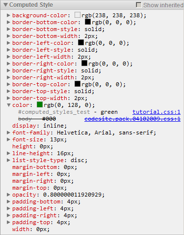
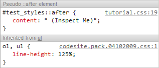
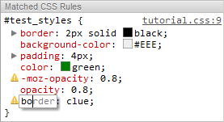
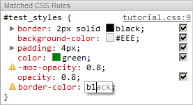
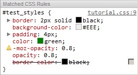
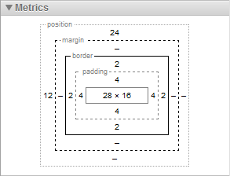
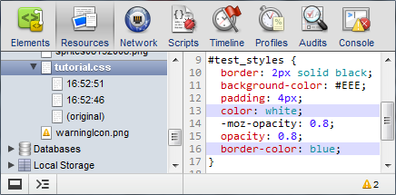

This tutorial covers editing CSS styles using various DevTools aids.
Note: If you are a Web Developer and want to get the latest version of Developer Tools, you should use the Google Chrome release from the Developer Channel.
Contents
Computed Style Pane
- Invoke context menu on THIS (Inspect Me) element or hit Control-Shift-C to enter the Inspect Element mode and click on it. Alternatively, if you have DevTools open, click the Magnifier button at the bottom of the Elements panel to point-click the element in the page.
- You will see several panes on the right-hand side of the panel. If the Computed Style pane is collapsed, expand it by clicking its header. The pane displays all the final values for CSS properties computed by the browser for the currently selected DOM node.
- For every property specified by more than one rule, the pane displays a computed trace, which is a stack of selectors applicable to the node and specifying the property value. Since rule selectors have different specificities, all but the top-most one will be “cancelled out” in the trace, which is denoted by a strike-through type.
- Whenever possible, a computed trace element will contain a link to the
source code fragment that defines the respective rule.

- The pane contains only properties from rules that are directly applicable to the selected element. In order to additionally display inherited properties, enable the Show inherited checkbox. Such properties will be displayed in a dimmed font.
Styles Pane
- For the currently selected DOM node, this pane displays all the styles applicable to this node. Styles with gray background are read-only, the rest are editable.
- Invoke the DevTools inspector on THIS element as mentioned above.
Viewing Styles
- The styles are displayed as closely to the original declaration as
possible. Some properties can have exclamation marks
() next to their
names. This means that the property name and/or value is not understood by the
browser, so the property is ignored (as per the CSS specification).
Note: A style declaration may contain several properties with the same name. Only the last one takes effect, canceling the preceding ones. Those will be struck out, like overridden properties.
- If a property value (say,
background-image) contains a URL that has been loaded, you can click it to navigate to the corresponding resource in the Resources panel. - CSS color values are accompanied by a swatch filled with the respective color. You can click the swatch to cycle through all color formats available for the corresponding property, or use the Gear menu options to set the format for all color values, for which the format has not been set by clicking on the color swatch. The As Authored option formats color values in the way they are written in the CSS code.
- Pseudo element styles, such as
::before,::after, and many more-webkit-*ones, are also exposed in the Styles pane, along with the rules inherited from ancestor elements.
Editing Styles
- Double-click the
worderproperty name, and type inboinstead. A validborderproperty name will be automatically suggested. - Hit Down several times to reach the
border-colorsuggestion, and press Enter or Tab to accept it and jump to the value field (alternatively, you can press Right to accept the suggestion and continue editing the field,) or Esc to cancel the change. As usual, Shift-Tab traverses input fields in the reverse order. - While editing the
border-colorproperty value, delete theclueword, and type inbl– in a moment, you will see a suggestion:black. - Press Up or Down to cycle through all suggestions starting
with
bl. Choose any color value you like, and press Enter or Tab to accept the suggestion and commit the new property value. The property gets committed, and the exclamation mark disappears, as the property has become valid. - Besides iterating through available value keywords, you can also
increment/decrement numeric property values (like
opacity: 0.8ormargin: 2px 4px) with the Up/Down and PageUp/PageDown keys. The unit delta can be controlled in the following ways:- 0.1 unit: Alt-Up/Down (or plain Up/Down if
the current value is in the range of
[-1; 1]) - 1 unit: Up/Down (for values greater than
1or less than-1) - 10 unit: Shift-Up/Down or PageUp/PageDown
- 100 unit: Shift-PageUp/PageDown
- 0.1 unit: Alt-Up/Down (or plain Up/Down if
the current value is in the range of
- Hover the mouse cursor over the rule body. You will see a checkbox to the right of each property in the rule.
- Uncheck a box to disable the
border-colorproperty (i.e. temporarily remove it from the style). The property gets struck out, and the change is instantly reflected in the inspected page. - Double-click the
border-colorproperty value and change it toLime, accept. Notice the property automatically get enabled with the updated value.
Adding New Rules and Properties
- You can add a new style rule to be considered in addition to those found
in the stylesheets loaded by the page. Click the Gear
button and
select the
New Style Rule option. A new rule with an automatically suggested selector appears. Press Enter to accept the selector and start typing in the first property of the rule.Note: If you edit the selector so that it will not match the selected element, the rule will turn dimmed and obviously, will not be applied to the element. You should rarely need to do this.
- You can also add a new property to any editable style by:
- Double-clicking the blank space of the first or last rule lines (those with curly braces).
- Hitting Tab while editing the last style property value (or the corresponding rule selector if no properties have been added yet.)
Metrics Pane
- The Metrics pane resides just below the Styles pane and allows you to examine and edit the current element’s box model parameters found in the computed style.
- The concentric rectangles contain the values for the padding, border, and margin properties (top, right, bottom, and left values for each of them.)
- For non-statically positioned elements, a position rectangle will
be additionally displayed in the pane, containing the values of the
top, right, bottom, and left properties.

- For
position: fixedandposition: absoluteelements, the central field contains the actualoffsetWidth × offsetHeight pixel dimensions of the selected element. - All values can be modified by double-clicking them, like property values in the Styles pane (the changes are not, however, guaranteed to take effect, as this is subject to the concrete element positioning specifics.)
Persisting Changes
- Upon an external style sheet rule modification, the respective resource text is updated in the Resources panel, and the revision history is stored for such style sheet resources until the DevTools window is closed.
- Activate the Resources panel, find tutorial.css in the resource tree. Note that the tree node is expandable. Click the arrow next to the node title, and you will see all the resource modifications that you have made above.
- Select any revision to see its differences from the original stylesheet
resource, highlighted line-wise.

- You can drag and drop a stylesheet revision node into most text editors to export the revision content.